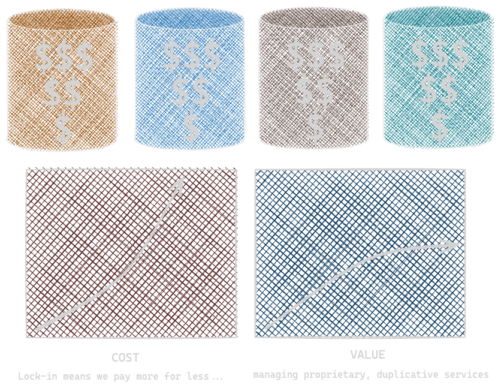

Cybersecurity is broken
In 2023, we will spend more than ever to enable and protect collaboration, and lose more than ever to attacks, misuse, and mistakes.
- 11% increase in expected losses
- 12% increase in total cybersecurity spend
- 15% increase in identity-related spend
- 25% increase in cyber insurance premiums
Why does spending more make things worse?
The cybersecurity industry is built around siloed, proprietary services. To gain incremental improvements in our overall cyber posture, we must repeatedly pay the maximum cost for each vendor's incremental value contribution.
As we become dependent on these proprietary silos, it ceases to matter if they provide differentiated value: it is simply too difficult to switch. This industry engagement model is wasteful, inefficient, and ineffective.
Changing this requires a more open foundation for collaboration.
